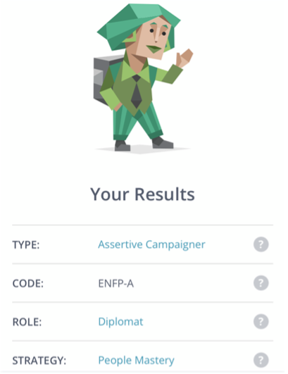
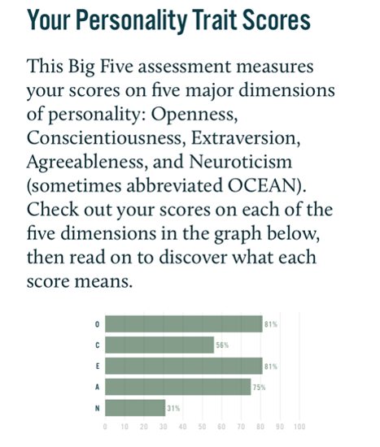
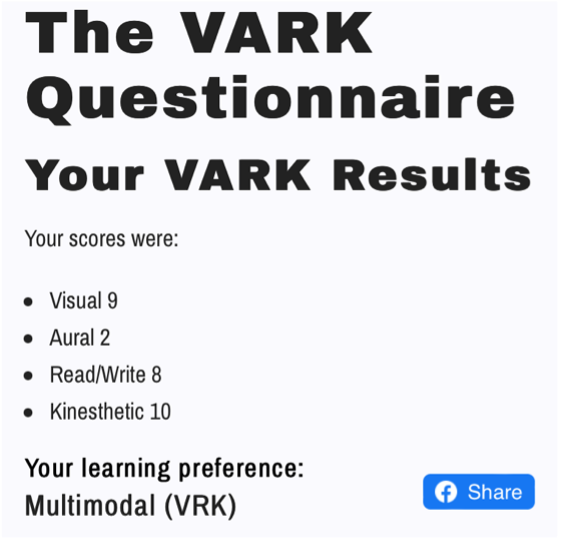

My name is Hannah, I was born and raised in Sydney. My parents are originally from Korean and growing up I was always stuck in between cultures. As stereotypes go, math is my worst nightmare, but I play a musical instrument and majored in classical piano for 1 year before I decided that I could not pursue a career in music and decided to look for a different avenue. My favourite hobby is travelling and learning new languages. I fluently speak Korean and lived in China for a short period of time to learn Chinese. I am still currently learning Mandarin with a group of friends and am learning Spanish on the side.
My interest in IT is the field of Cyber Security and Artificial Intelligence. After completing an introductory course in Cyber Security when I studied a diploma in IT, I become aware of how vulnerable our data and security is against hackers or cyber criminals who are determined to steal data for dangerous motives. Different case studies taught me the importance of cyber security to protect the data and security of each individuals, especially those who lack knowledge in cyber security and are unaware of their vulnerabilities. My interest in artificial intelligence stemmed after learning about Tesla’s autopilot features. The ideas and concepts are revolutionary but the ethics are debatable since computers cannot make the same conscious decisions that humans can make. As technology evolves, more revolutionary tools will be developed to heighten the comfort of humans but I believe the same ethical questions will rise and this never-ending debate continues to interest me.
I chose to come to RMIT because I wanted to continue my studies in IT while working simultaneously. I am currenting working as an office admin and I have come to love my work environment, my colleagues, and my job that I would love to continue where I am with my work for as long as possible. Also, in order to pay for my holidays, this meant that I needed to be savvy with my money and maintain an income. Since RMIT offered online studies, it seemed like the perfect opportunity for me to pursue my career in the IT field while doing the work I enjoy.
I understand that IT covers a wide branch, and I would like to deepen my understanding of the different branches and jobs available in this field. I expect to learn practical skills such as programming and research methods into tracing back user footprints as well as research methods to understand how other users view IT and apply it in their own lives to improve IT experiences.
This is a position which searches and locates vulnerabilities which are in the system to prevent an attack, responds when an attack occurs and traces back the steps of how a breach occurred after a cyber-attack. This position is particularly appealing because it handles multiple different roles in cyber security. Since each task and situation will be different, no two days will be the same. Further, with each task there will also be different methodologies to approach the cyber landscape and the methods used to mitigate, respond to and investigate cyber threats and instances will be distinct each time. This role also works as a part of a team which can help members bouncing ideas off each other and find a satisfactory result. Not only this but knowing that my work is something that helps others for their benefit will also give me a high sense of accomplishment.
Beyond basic programming skills and networking skills, this position requires an in-depth knowledge of the current trends of cyber security attacks as well as previous trends of cyber security breaches which will assist in detecting cyber-attacks which have evolved from past methods. This position also needs multiple years of experience working as either a software engineer or a career in cyber security such as a network incident responder, network security engineer, system administrator or penetrator tester will be required. They should be able to extract evidence from the network that shows the vulnerabilities or when tracing back how a cyber breach occurred. This role also requires an individual who is proficient in systems engineering and encryption which will help them prevent breaches. The candidate should have experience working as a part of a team which prevents, responds to or investigates cyber breaches. Their experience and knowledge will help find vulnerabilities and notice the patterns in cyber threats when it occurs or when investigating after a threat presents itself. Multiple certificates such as the Certified Information Security Systems Professional (CISSP) or the Certified Information Security Manager (CISM) will be beneficial with the role.
I have basic programming skills in Java, SQL and Python. I also try to keep up with current cyber trends through news articles. I currently lack in any experience in IT field but I believe other skills will also be beneficial in pursuing a career in this industry. Due to my work, I have grown a high level of attention to detail which can be beneficial when investigating for vulnerabilities in the system and investigation. I am also used to working in teams and having open communication with other team members for solutions that will solve the problems more efficiently and successfully.
I plan to complete a few cyber security certificates while completing my course in Bachelor of Information Technology. Once this degree is completed, I would like to apply for a role in cyber security such as a security analyst, incident responder, vulnerability assessor or digital forensic. However, if that is not possible, I would like to work as a software engineer, data analyst or systems administrator and gain experience for some years working in the IT industry before moving on to more specific cyber security roles. I would also need to continuously study and keep up to date with current threats and methods as well as the trends in cyber security.
| MBTI Results | Big Five Test Results | VARK Test Results |
|---|---|---|
|  |  |  |
These results represent that I enjoy new experiences to gain more knowledge and understanding. I am open to new ideas and concepts, preferring to be shown by text or demonstration to grasp the meaning behind new perceptions. My learning style is highly visual but triggers are required for effective learning such as writing notes or drawing ideas out to remember the key points. Since I am extraverted, I enjoy studying in a group setting but I can also be easily distracted when studying in a group and become a distraction to others.
Considering a team setting, these results reflect that I am open to learning about the ideas that other team members have, even if they are contrary to my own opinions and belief system. I may need some encouragement to be more self-disciplined and stick to strict deadlines but with encouragement from others, as a people pleaser, I will be more inclined to please other team members and ensure my best work. These results show that with an extraverted personality, I will enjoy open communication with other team members and keeping in touch during each process so everyone will be on the same page without any misunderstandings.
In my opinion this shows that when forming a team, I need to look for personalities who are more disciplined and can lead the team, assigning roles to each member. As an ENFP who enjoys exploring new ideas and learning different opinions, it would be important to find team members who can bring differing opinions that can challenge each other and further develop those ideas. Team members who also enjoy open communication would be a key to maintaining high team morale to continue working towards the task and achieving the same goal.
My project idea is to make a smart phone app which helps the user plan a trip revolving around their budget by incorporating tickets, manual inserts and calculating other fees and costs for them. This app uses reviews from other users who also visited the same places and internet searches of the costs of activities which are available on different websites, including minute details such as transportation, tipping and average spends at different restaurants around town. Although there are many other budget apps available, many are to keep track of spending while this app is beneficial for travelers to plan how much they should budget for their upcoming trip.
While planning trips, I have always tried to budget for my holidays but found that at times I did not budget enough because I did not realize of the minor costs such as the tipping culture in America or even parking tickets going to major city centers. Budgeting is important when planning trips as it can relieve stress and anxiety on how much is being spent during and how much work will be required to pay it off (Black, 2014). Gabriela Aragon who is a veteran travel consultant states that when helping her customers to plan their travels and budget, many people don’t know how much their budget for a holiday is and this can be difficult in planning a trip (CNN, 2019). Hence, an application which helps travelers to plan out a travel budget even if they don’t know how much their budget is, will be of great benefit to their finance.
This application allows for the user to plan out their trip and itinerary. Trips both upcoming and past will be displayed on the main page, meaning the user can refer to past trips for itinerary ideas and budget suggestions. There will be an option to view the trips of other users for reference by searching for the geographical location and if other users choose to make their trips and budgets public. Each trip will display the user’s budget which the user must enter manually. This budget can be decreased or increased and there will also be an option to have an unlimited budget as an option if the user is trying to calculate the costs to set an estimate budget. Along with the budget, as the itinerary starts to fill up, there will be an indication of how much of the budget is remaining out of the total.
Trip itineraries can be added with receipts of tickets which have been bought which will automatically update the itinerary and costs. Another method when planning the itinerary without solid plans or purchased tickets is to manually fill the itinerary by searching destinations, tickets or activities through the app which will create a search on the internet. The user can add these activities onto the itinerary and the app will add it as an ambiguous plan. These additions from manual searches will have the costs adjusted in real time, such as plane tickets which have not purchased but added to the itinerary. If two itineraries are apart in location, it will also prompt questions such as transportation modes. With plans like car rentals, the app will prompt extra questions to calculate the fees more accurately such as the age of the driver which will increase the fees if younger than 21 in certain countries or the option of renting navigation systems. This will help calculate even the small costs so there will be no hidden or surprise fees when travelling.
All activities and tickets will have an option to change the price manually but there will also be a button to revert to the given price. All fees will be displayed in the user’s local currency but for foreign currencies, it will display both so the app can work around the user’s budget by the local currency. Itineraries and trips will be stored on the cloud which will allow different users in the group to add and takeaway from the itinerary. A history of changes will be available to undo changes or to bring back a deleted item on the itinerary. Once on the trip or after the trip, users can go back to adjust the prices and share it with the public so other users can benefit from their experience.
Developing a smart phone application requires multiple skills and tools. Programming and knowledge of different coding languages are needed depending on the platform to write the rules for how the app will run. A database is also required to support the functions on the app and an API to retrieve and respond to information and commands, therefore, programming knowledge will also be required when building the database and API (Team Invonto, 2021). For example, while knowledge of Objective-C is required to run the app on iOS platforms, knowledge of Java is required for any Android platforms. Also, for the app to retrieve information from the web, HTTP must be implemented, hence knowledge of HTTP and algorithms to use HTML files will be needed.
UX and UI design skills are needed to design the app. It can be designed by the developer but it would be preferable to hire a UX or UI developer to create designs since it will be more efficient and experienced UX and UI designers will understand what displays will boost the comfort of the users (Ching, 2021). There are also paid mobile phone app templates that are available on the web which allows room for customization by programmers.
If this project is successful, it will help many travelers in planning their trips ahead of time, understanding what costs will be involved and how much they would need to save up for their trip. Since the itinerary is also displayed, users on holiday can use it as a guide or a planner for their trip. With the shared user experiences, travelers could better plan their itinerary looking for options on both spectrums of the price range. This development will cause less stress and anxiety for vacation trips as users will have better knowledge on the spending they are to expect and they will have a clearer goal to manage their savings and budget.